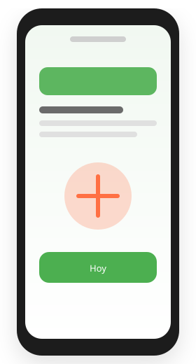

Recordatorios push personalizados
Notificaciones adaptadas al horario académico del estudiante para que nunca olvide una comida principal.
NUTIOK es el compañero inteligente que ayuda a los estudiantes universitarios a mantener una alimentación saludable dentro de sus exigentes jornadas académicas.
El 70% de los universitarios omite al menos una comida principal por día debido a sus horarios académicos.

Cinco herramientas pensadas para tu rutina universitaria: planificación, inspiración y apoyo nutricional en un solo lugar.
Notificaciones adaptadas al horario académico del estudiante para que nunca olvide una comida principal.
Colección de recetas nutritivas, fáciles de preparar y económicas, pensadas para la vida universitaria.
Localiza opciones de alimentación saludable y económica alrededor de la universidad mediante Google Maps API.
Calcula automáticamente el Índice de Masa Corporal y genera un perfil nutricional personalizado para cada usuario.
Registro diario de hábitos alimenticios para seguimiento personal y toma de conciencia nutricional.
Tres pasos para integrar NUTIOK a tu semana académica.
Ingresa tus datos básicos: peso, altura, edad y objetivo de salud.
Indica tus clases, horarios y metas nutricionales.
NUTIOK te recordará comer, te sugerirá recetas y restaurantes cercanos.
Escríbenos y con gusto te respondemos.
Pregunta por funcionalidades, tecnologías o el estado del proyecto. El asistente usa Gemini y solo responde en el contexto de NUTIOK.